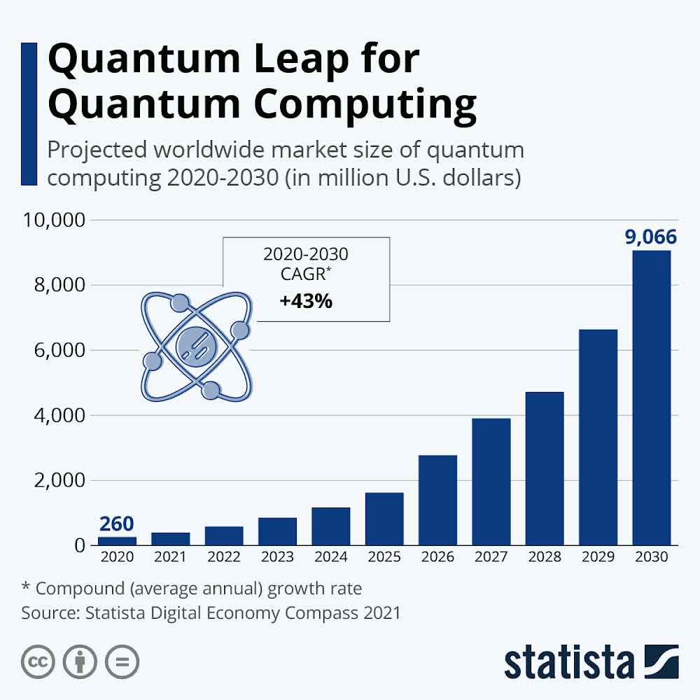

Computação Quântica
É um campo inovador na computação, fundamentado nos princípios fascinantes da superposição
e do entrelaçamento quântico. Em contraste com a computação tradicional, essa abordagem teórica
promete armazenar uma quantidade significativamente maior de estados por unidade de informação e
executar algoritmos numericamente mais eficientes.
Utiliza os princípios da mecânica
quântica, que se dedica ao estudo das partículas atômicas e subatômicas na física. Essa abordagem
visa superar as limitações da informática clássica, Apesar dela apresentar na prática problemas
evidentes de escalabilidade e coerência, permite realizar inúmeras operações simultâneas.
Princípios da Compuatação Quântica
Um computador quântico funciona usando princípios quânticos. Os princípios quânticos requerem
um novo dicionário de termos para serem totalmente compreendidos. Os termos são superposição,
entrelaçamento e decoerência. Vamos vê-los a seguir.
A superposição diz que, assim como as ondas na física clássica, você pode adicionar dois ou mais
estados quânticos e o resultado será outro estado quântico válido. Porém, você também pode
representar cada estado quântico como uma soma de dois ou mais estados distintos.
permitindo que processem milhões de operações simultaneamente.
Ocorre quando dois sistemas se ligam tão intimamente que o conhecimento sobre um fornece a você
conhecimento sobre o outro, não importa quão longe eles estejam. Os processadores quânticos
podem obter conclusões sobre uma partícula medindo outra. Por exemplo, eles podem determinar que,
se um bit quântico tem rotações ascendentes, o outro sempre terá rotações descendentes e vice-versa. O entrelaçamento quântico permite que os
computadores quânticos resolvam problemas complexos mais rapidamente.
É a perda do estado quântico em um bit quântico. Se dá por fatores ambientais, como a radiação, podem causar o colapso do estado quântico dos bits quânticos. Um dos grandes desafios de engenharia na construção de um computador quântico é projetar vários recursos que tentam retardar a decoerência do estado, como a construção de estruturas especiais que protegem os bits quânticos de campos externos.
Vantagens e Desvantegens
O Que é Qubits?
A informática quântica emprega unidades fundamentais chamadas qubits em vez dos bits convencionais. Uma característica central desse sistema inovador é sua capacidade de permitir a superposição coerente de zeros e uns, os elementos básicos do sistema binário que sustenta toda a computação. Em contraste com o bit, que pode ter apenas um valor por vez (um ou zero), um qubit pode existir simultaneamente como zero e um, e, além disso, em diferentes proporções.
Essa descoberta da tecnologia quântica significa que um qubit pode representar zero e um ao mesmo tempo, proporcionando uma variedade de estados. Isso resulta em um desempenho notavelmente rápido, onde um computador quântico com apenas 30 qubits pode realizar incríveis 10 trilhões de operações de ponto flutuante por segundo. Imagine o seguinte: enquanto o computador clássico percorreria todos os nomes de uma lista para encontrar o telefone de uma pessoa específica, o quântico leria todos os nomes de uma só vez e apresentaria na hora o solicitado.
Para mais informações:Clique Aqui
Diferenças entre a Computação Quântica e a Tradicional
A computação quântica e a tradicional são dois mundos paralelos com algumas igualdades e algumas diferenças entre si, como o uso do qubit e não o bit. A seguir, algumas diferenças relevantes entre elas:
Como funciona
Um computador quântico contém três partes principais:
1- Uma área que hospeda os qubits
2- Um método para transferir sinais aos qubits
3- Um computador clássico para executar um programa e enviar instruções
Alguns métodos de armazenamento de qubits envolvem manter a unidade que abriga esses qubits a uma temperatura extremamente próxima do zero absoluto. Isso é feito para maximizar a coerência dos qubits. Em outros sistemas de hospedagem de qubits, utilize uma câmara descartável para minimizar as vibrações e fornecer estabilidade aos qubits. Para enviar sinais aos qubits, existem vários métodos, como o uso de microondas, lasers e voltagem. Essas abordagens permitem manipular os qubits de maneira controlada, sendo parte importantíssima do funcionamento dos sistemas de computação quântica.
para mais informações clique aqui
Gráfico Projetado(2020-2030)
No Gráfico abaixo, mostra o quanto esta projetado o mercado mundial de computação quântica de 2020-2030 (em milhões de dólares americanos).Estima-se que em 2030 a taxa anual da computação quântica seja mais de 9 milhões de dólares.
O que falta para emplacar a tecnologia
ninguém sabe exatamente quando o sonho vai se tornar realidade. A única certeza é que ainda vai demorar. O alto custo de hardware e de manutenção dos processadores é um dos principais obstáculos que dificultam a disparada da tecnologia. Além disso, para manter a estabilidade dos qubits, os equipamentos são mantidos em ambientes extremamente frios, com temperaturas abaixo de zero.